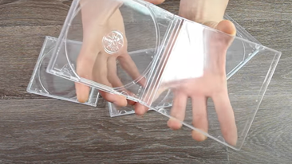
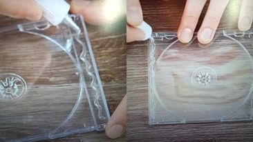
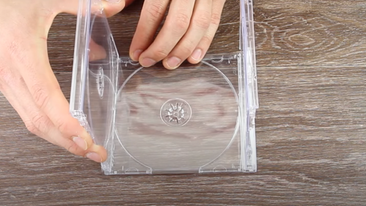
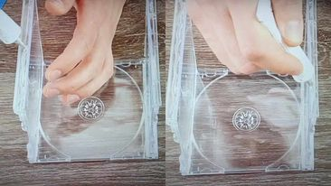
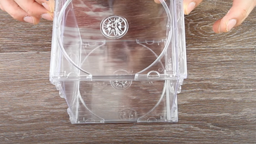
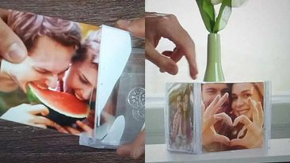

Repurpose old CD cases by removing the CD holder and inserting a photo or artwork. Hang them on the wall or display them on a shelf for a modern and minimalist look!
STEP 1: We need 4 pieces of clear CD case.
STEP 2: Put a glue on each side of the CD case.
STEP 3: Put another 2 CD cases on each side on top of the glue.
STEP 4: Put a glue on top of each side of the two CD cases.
STEP 5: Put another clear CD case on top of each side of the two CD cases and let it dry for few minutes.
STEP 6: After you let it dry, then you're ready to put a picture on your D.I.Y CD case picture! You can put pictures on each side as you want.
